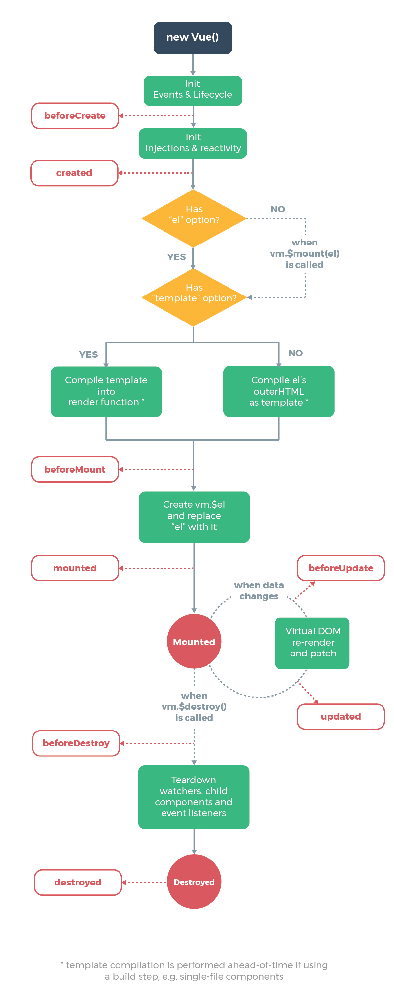
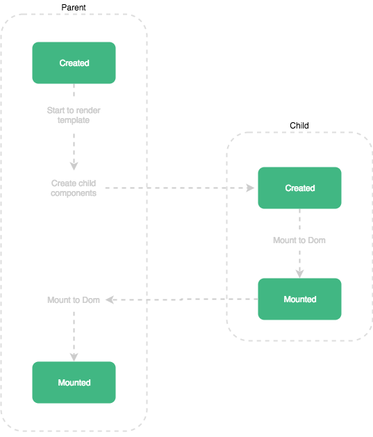

<!DOCTYPE html><html lang="zh-CN"><head><meta name="generator" content="Hexo 3.9.0"><meta http-equiv="content-type" content="text/html; charset=utf-8"><meta content="width=device-width, initial-scale=1.0, maximum-scale=1.0, user-scalable=0" name="viewport"><meta content="yes" name="apple-mobile-web-app-capable"><meta content="black-translucent" name="apple-mobile-web-app-status-bar-style"><meta content="telephone=no" name="format-detection"><meta name="description"><title>【译】Vue中父子组件的生命周期函数 | Kaely's Blog</title><link rel="stylesheet" type="text/css" href="/css/style.css?v=0.0.0"><link rel="stylesheet" type="text/css" href="//lib.baomitu.com/normalize/8.0.1/normalize.min.css"><link rel="stylesheet" type="text/css" href="//lib.baomitu.com/pure/1.0.0/pure-min.css"><link rel="stylesheet" type="text/css" href="//lib.baomitu.com/pure/1.0.0/grids-responsive-min.css"><link rel="stylesheet" href="//lib.baomitu.com/font-awesome/4.7.0/css/font-awesome.min.css"><script type="text/javascript" src="//lib.baomitu.com/jquery/3.4.0/jquery.min.js"></script><link rel="icon" mask sizes="any" href="/favicon.ico"><link rel="Shortcut Icon" type="image/x-icon" href="/favicon.ico"><link rel="apple-touch-icon" href="/apple-touch-icon.png"><link rel="apple-touch-icon-precomposed" href="/apple-touch-icon.png"><link rel="alternate" type="application/atom+xml" href="/atom.xml"></head><body><div class="body_container"><div id="header"><div class="site-name"><h1 class="hidden">【译】Vue中父子组件的生命周期函数</h1><a id="logo" href="/.">Kaely's Blog</a><p class="description">生活就是迷阵</p></div><div id="nav-menu"><a class="current" href="/."><i class="fa fa-home"> 首页</i></a><a href="/archives/"><i class="fa fa-archive"> 归档</i></a><a href="/atom.xml"><i class="fa fa-rss"> 订阅</i></a></div></div><div class="pure-g" id="layout"><div class="pure-u-1 pure-u-md-3-4"><div class="content_container"><div class="post"><h1 class="post-title">【译】Vue中父子组件的生命周期函数</h1><div class="post-meta">Jun 29, 2018<span> | </span><span class="category"><a href="/categories/前端/">前端</a></span></div><a class="disqus-comment-count" href="/2018/06/29/Vue-Parent-and-Child-lifecycle-hooks/#vcomment"><span class="valine-comment-count" data-xid="/2018/06/29/Vue-Parent-and-Child-lifecycle-hooks/"></span><span> 条评论</span></a><div class="clear"><div class="toc-article" id="toc"><div class="toc-title">文章目录</div><ol class="toc"><li class="toc-item toc-level-2"><a class="toc-link" href="#父-子组件内的生命周期钩子"><span class="toc-text">父/子组件内的生命周期钩子</span></a></li><li class="toc-item toc-level-2"><a class="toc-link" href="#属性（props）的响应式（reactivity）"><span class="toc-text">属性（props）的响应式（reactivity）</span></a></li><li class="toc-item toc-level-2"><a class="toc-link" href="#总结"><span class="toc-text">总结</span></a><ol class="toc-child"><li class="toc-item toc-level-3"><a class="toc-link" href="#个人总结"><span class="toc-text">个人总结</span></a></li></ol></li></ol></div></div><div class="post-content"><p>&nbsp;&nbsp;最近项目中遇到了地图模块挂载到DOM节点并进行初始化的问题，背后其实就是Vue中父子组件初始化的顺序问题，发现这篇文章的例子通俗易懂，遂翻译一下，如果错误还请指正。</p>
<a id="more"></a>
<p><a href="https://medium.com/@brockreece/vue-parent-and-child-lifecycle-hooks-5d6236bd561f" target="_blank" rel="noopener">原文链接</a></p>
<p>如果你在项目中使用Vue，那么我肯定你很熟悉组件生命周期内的钩子函数，但是你未必清楚父子组件内生命周期钩子触发的顺序和对属性（props）的影响</p>
<p style="text-align:center;"></p>

<h2 id="父-子组件内的生命周期钩子"><a href="#父-子组件内的生命周期钩子" class="headerlink" title="父/子组件内的生命周期钩子"></a>父/子组件内的生命周期钩子</h2><p>下面的例子在父子组件的<strong>Mounted</strong>和<strong>Created</strong>两个钩子触发时会给出相应的提示。如你所见，<strong>Created</strong>是正常的先父后子的顺序触发，但<strong>Mounted</strong>钩子则正好相反</p>
<iframe src="https://codesandbox.io/embed/j38wnqjy65" style="width:100%; height:500px; border:0; border-radius: 4px; overflow:hidden;" sandbox="allow-modals allow-forms allow-popups allow-scripts allow-same-origin"></iframe>

<p>一开始这可能很难很难理解，但如果我们通过逻辑的角度去遵循组件初始化工作流程，就能理解这种顺序。我们只要记住，父组件在其挂载template到DOM之前必须等待所有的子组件都完成挂载（mounted）操作。</p>
<p style="text-align:center;"></p>

<p>若果你的组件通过属性（props）来通讯，以上钩子的执行顺序会很重要。</p>
<h2 id="属性（props）的响应式（reactivity）"><a href="#属性（props）的响应式（reactivity）" class="headerlink" title="属性（props）的响应式（reactivity）"></a>属性（props）的响应式（reactivity）</h2><p>一个组件在<strong>Created</strong>钩子触发之前就可以是响应式的，这意味在其父组件的<strong>Mounted</strong>钩子触发之前它就能够开始追踪属性（props）的变化。如果你在父组件的<strong>Mounted</strong>钩子中去设置一些属性的值，你一定要牢记这一点。</p>
<p>下面的例子展示了如果在父组件的<strong>Created</strong>和<strong>Mounted</strong>两个钩子中都去设置子组件的属性值会发生什么。如你所见，在子组件的<strong>Mounted</strong>钩子中我们监测到了两次对属性值的改变操作（个人补充：父组件<strong>Mounted</strong>之前的data里面对属性赋值触发了一次，父组件<strong>Mounted</strong>时候的改变属性值又让子组件触发了一次）<br></p>
<iframe src="https://codesandbox.io/embed/z2yonj9kq4" style="width:100%; height:500px; border:0; border-radius: 4px; overflow:hidden;" sandbox="allow-modals allow-forms allow-popups allow-scripts allow-same-origin"></iframe>

<p>假设你的子组件在属性值改变的时候会进行一次Ajax请求，这样就会触发两次请求，甚至造成请求的未响应。</p>
<h2 id="总结"><a href="#总结" class="headerlink" title="总结"></a>总结</h2><p>如果你想深入的了解Vue的生命周期钩子，我强烈建议你读一下<a href="https://alligator.io/vuejs/component-lifecycle/" target="_blank" rel="noopener">这篇文章</a>。</p>
<p>但通常来说，我建议如果你只在组件的<strong>Mounted</strong>钩子进行需要和DOM交互的操作，而其他的操作都放在<strong>Created</strong>钩子中</p>
<h3 id="个人总结"><a href="#个人总结" class="headerlink" title="个人总结"></a>个人总结</h3><p>从生命周期的角度来看： 父 Created - 子 Created - 子 Mounted - 父 Mounted<br>对应过程Props的改变： 子 prop 改变 ——— 子 prop 改变 ——— 子 prop 改变  </p>
</div><div class="tags"><a href="/tags/FE/">FE</a><a href="/tags/Vue/">Vue</a></div><div class="post-nav"><a class="pre" href="/2019/01/20/mongoDB-geospatial/">mongoDB中地理空间查询指北</a><a class="next" href="/2017/11/12/vector-tile-openlayers-try/">矢量切片的使用尝试1—openlayers应用</a></div><div id="vcomment"></div><script src="//cdn1.lncld.net/static/js/3.0.4/av-min.js"></script><script src="//unpkg.com/valine@latest/dist/Valine.min.js"></script><script>var notify = 'false' ? true : false;
var verify = 'false' ? true : false;
var GUEST_INFO = ['nick','mail','link'];
var guest_info = '昵称,邮箱,link(http://)'.split(',').filter(function(item){
  return GUEST_INFO.indexOf(item) > -1
});
guest_info = guest_info.length == 0 ? GUEST_INFO :guest_info;
window.valine = new Valine({
  el:'#vcomment',
  notify:notify,
  verify:verify,
  appId:'JiVmJ5xNgTfByqBf0Q3yzn34-MdYXbMMI',
  appKey:'JzqWx7VloHTdOoYQ2z9w6hwF',
  placeholder:'想说点什么吗？',
  avatar:'wavatar',
  guest_info:guest_info,
  pageSize:'10'
})</script></div></div></div><div class="pure-u-1-4 hidden_mid_and_down"><div id="sidebar"><div class="widget"><form class="search-form" action="//www.google.com/search" method="get" accept-charset="utf-8" target="_blank"><input type="text" name="q" maxlength="20" placeholder="Search"><input type="hidden" name="sitesearch" value="http://kael.top"></form></div><div class="widget"><div class="widget-title"><i class="fa fa-folder-o"> 分类</i></div><ul class="category-list"><li class="category-list-item"><a class="category-list-link" href="/categories/Node/">Node</a></li><li class="category-list-item"><a class="category-list-link" href="/categories/PostGIS/">PostGIS</a></li><li class="category-list-item"><a class="category-list-link" href="/categories/TileStrata/">TileStrata</a></li><li class="category-list-item"><a class="category-list-link" href="/categories/WebGIS/">WebGIS</a></li><li class="category-list-item"><a class="category-list-link" href="/categories/前端/">前端</a></li></ul></div><div class="widget"><div class="widget-title"><i class="fa fa-star-o"> 标签</i></div><div class="tagcloud"><a href="/tags/FE/" style="font-size: 15px;">FE</a> <a href="/tags/GIS/" style="font-size: 15px;">GIS</a> <a href="/tags/Leaflet/" style="font-size: 15px;">Leaflet</a> <a href="/tags/OpenLayers/" style="font-size: 15px;">OpenLayers</a> <a href="/tags/Vue/" style="font-size: 15px;">Vue</a></div></div><div class="widget"><div class="widget-title"><i class="fa fa-file-o"> 最近文章</i></div><ul class="post-list"><li class="post-list-item"><a class="post-list-link" href="/2020/06/23/radar-vector-tile-try/">试着还原下墨迹mapbox合作的雷达图展示</a></li><li class="post-list-item"><a class="post-list-link" href="/2020/05/17/web-grid-data-render-1/">在web中渲染格点数据探讨（1）</a></li><li class="post-list-item"><a class="post-list-link" href="/2019/11/18/leaflet-canvas-marker/">Leaflet.Canvas-Marker-Layer 图层的诞生</a></li><li class="post-list-item"><a class="post-list-link" href="/2019/07/22/tilestrata-plugin/">tilestrata 插件发开指南</a></li><li class="post-list-item"><a class="post-list-link" href="/2019/07/18/tilestrata-intro/">tilestrata 入门指南</a></li><li class="post-list-item"><a class="post-list-link" href="/2019/07/15/tilestrata-disk/">tilestrata-disk 插件使用及浅析</a></li><li class="post-list-item"><a class="post-list-link" href="/2019/07/15/tilestrata-etag/">tilestrata-etag 插件使用及浅析</a></li><li class="post-list-item"><a class="post-list-link" href="/2019/07/14/tilestrata-sharp/">tilestrata-sharp 插件使用及浅析</a></li><li class="post-list-item"><a class="post-list-link" href="/2019/07/14/tilestrata-gm/">tilestrata-gm 插件使用及浅析</a></li><li class="post-list-item"><a class="post-list-link" href="/2019/07/11/tilestrata-lru/">tilestrata-lru  插件使用及浅析</a></li></ul></div><div class="widget"><div class="widget-title"><i class="fa fa-external-link"> 链接</i></div><ul></ul><a href="https://github.com/zzcyrus" title="我的Github" target="_blank">我的Github</a></div></div></div><div class="pure-u-1 pure-u-md-3-4"><div id="footer">Copyright © 2020 <a href="/." rel="nofollow">Kaely's Blog.</a> Powered by<a rel="nofollow" target="_blank" href="https://hexo.io"> Hexo.</a><a rel="nofollow" target="_blank" href="https://github.com/tufu9441/maupassant-hexo"> Theme</a> by<a rel="nofollow" target="_blank" href="https://github.com/pagecho"> Cho.</a></div></div></div><a class="show" id="rocket" href="#top"></a><script type="text/javascript" src="/js/totop.js?v=0.0.0" async></script><script type="text/javascript" src="//lib.baomitu.com/fancybox/3.5.7/jquery.fancybox.min.js" async></script><script type="text/javascript" src="/js/fancybox.js?v=0.0.0" async></script><link rel="stylesheet" type="text/css" href="//lib.baomitu.com/fancybox/3.5.7/jquery.fancybox.min.css"><script type="text/javascript" src="https://cdn.jsdelivr.net/npm/mermaid@7.1.2/dist/mermaid.min.js" async></script><script type="text/javascript" src="/js/codeblock-resizer.js?v=0.0.0"></script><script type="text/javascript" src="/js/smartresize.js?v=0.0.0"></script></div></body></html>